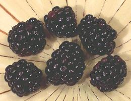
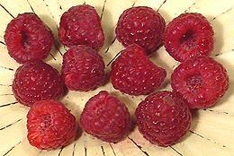
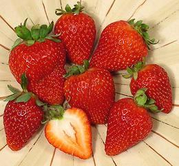
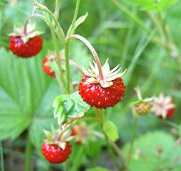
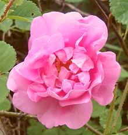
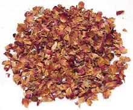
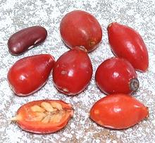
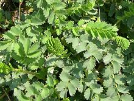
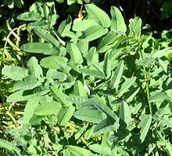
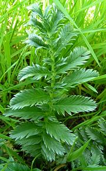

SAFARI
Users
- Brambles - Blackberries, Raspberries, etc.
- Strawberries - Domestic and wild.
- Roses - Rose hips & Petals.
- Burnet - Salad herbs & Greens
- Silver Weeds - Edible roots.
Brambles
[genus Rubus] These plants produce fruits similar to plums and other Stone Fruit, but they are tiny and loosely glued together into clusters. The stones are so small they're eaten right along with the flesh.
Blackberry [Rubus fruticosus | California Blackberry; Rubus ursinus] Blackberries are cultivated in the temperate zones of North America, South America and Europe, particularly the British Isles. The US State of Oregon is the leading commercial producer. Since these plants hybridize easily there are many cultivars, both commercial and for home gardeners. Blackberries are generally quite a bit larger than the similar raspberries. Blackberries are high in vitamin C, vitamin K, folic acid and
manganese as well as being high in antioxidants. Blackberries, including
fruit, leaves and roots, have a number of medicinal uses.
Raspberry [Rubus idaeus var idaeus (Eurasian), Rubus idaeus var strigosus (American), Rubus occidentalis (American Black Raspberry), others]
Raspberries are an important commercial crop throughout the northern
temperate region. They are rather difficult to pack and ship fresh
because they are so fragile, so most are frozen or processed into
juices and flavorings. They now come in several colors.
|
Strawberries
These fruits consist of a cup shaped base that supports the ovaries. This base swells up and becomes convex as the fruit ripens. The true fruits, which we think of as seeds, remain embedded in the skin surface which is now the outside.
Garden Strawberry [Fragaria x ananassa] California produces 75% of the strawberries grown in the US, and Florida is second, growing mostly California varieties. Oregon also produces strawberries commercially but mostly the Canadian Totem variety more suited to processing than eating fresh. Every other state claims their small berries are far superior in
flavor to the big California berries, but the big berries are
economical to harvest, ship well, and look really great on fruit
plates. So important is the strawberry crop to California that a
major new highway was routed around a patch of wild strawberries that
are part of the gene pool used to develop the state's varieties.
Woodland Strawberry [Alpine Strawberry, Wild European Strawberry; Fraises des Bois (French); Fragaria vesca]
These strawberries have been consumed by humans for more than 10,000
years but are today used mainly to flavor liqueurs, jams and sauces.
They have a much stronger flavor than garden strawberries but are
difficult to harvest due to their small size. The largest grower is
Turkey, which exports most of the harvest to Europe.
Photo by Foolip contributed to public domain.
|
Roses
[genus Rosa] Of the many species and cultivars of roses, nearly all are purely decorative, but some are used in perfumery and a very few have culinary uses.
Damask Rose - Water [Rosa x damascena] This very fragrant rose is a hybrid of Rosa Gallica, probably from the Caucasus, and Rosa moschata, the Musk Rose, probably from the western Himalayas. It is harvested in manufacture of Rose Water, an important flavoring throughout India, Persia, the Middle East, and still used in parts of Europe. Rose Water is used primarily in sweets and deserts. Rose syrup, made
from rosewater and sugar, is popular in France, used in drinks and deserts.
Photo by Javad Yousefi distributed under license Creative
Commons
Attribution Share-Alike v3.0 Unported.
Damask Rose - Petals [Rosa x damascena] This very fragrant rose is a hybrid of Rosa Gallica, probably from the Caucasus, and Rosa moschata, the Musk Rose, probably from the western Himalayas. It is harvested for Rose Petals, which are important in the cuisines of India, Persia, and the Middle East, and were in Europe from ancient times into the Renaissance. They are most used powdered in stews, dips, and sauces, and sprinkled on yogurt. Gulkand, originating in India, is a preserve made of whole fresh rose
petals mixed with sugar and water, then simmered down until thickened.
This potion is also used medicinally in some Asian systems.
Rose Hips [Rosa canina]
Roses produce fruits structured similarly to apples and pears but much
smaller and much less fleshy. Commercial rose hips come from a simple
five petal rose (Rosa canina or Dog Rose) native to
Europe and Western Asia. The fruits are used in herbal teas and
otherwise for their high content of antioxidants, vitamin C and other
medicinally important substances. It is reported that during the
Vietnam War rose hips were dried, mixed with tobacco and smoked to
produce mild hallucinations and abnormal dreams, but this needs
verification. The photo specimenns were up to 1 inch long and 0.6
inch diameter, weighing 12 to the ounce (2.3 grams each). They were
shipped frozen from Lithuania.
|
Burnet
[genus Sanguisorba]
Salad Burnet] [Garden Burnet, Small burnet; Sanguisorba minor | Great Burnet; Sanguisorba officinalis S. minor is a perennial herb growing to a bit less than 3 feet high, but usually lower. It is native to Europe, northwest Africa and southwest Asia, and has colonized most of North America. It is highly thought of as a salad ingredient, used in both salads and dressings, with a light cucumber-like flavor. It was favored by Thomas Jefferson and planted on his estate. Young leaves should be used as they become bitter with age. Medicinal virtues are similar to those of Great Burnet. Great Burnet looks pretty much like Salad Burnet but is
taller, growing to a little over 3 feet high. Leaves picked before
flowering can be used raw in salads or cooked. Fresh or dried leaves
are used in herbal teas. The plant has a number of medicinal uses.
Photo of S. minor by Archenzo distributed under
license Creative Commons
Attribution Share-Alike v3.0 Unported.
Canadian Burnet [American Burnet; Sanguisorba canadensis]
This perennial herb is native to bogs, marshes and roadsides from
Labrador in Canada to Georgia in the United States, from Illinois to
the East Coast. It grows to as much as 5 feet high. The leaves are
edible with the light cucumber flavor found in Salad Burnet, but
unless the leaves are very young they need to be cooked to remove
the bitterness.
Photo by Montrealais distributed under license Creative
Commons
Attribution Share-Alike v3.0 Unported.
|
Silverweeds
[genus Argentina] There are at least 4 species in this genus, but only one is noted for food use.
Common Silverweed [Djüma, Toma, Doma, Droma (Tibet); Silverweed Cinquefoil, Goosewort, Goose grass, Goose tansy; Argentina anserina] This plant is native to most of the temperate regions of the Northern Hemisphere, spreading by runners and growing to about 8 inches high with yellow flowers. The underside of the leaves is covered with silvery hairs, thus the name "silverweed". While the roots were used as food in the Scottish Highlands before arrival of the potato, and by American Indians, today they are used mostly in Tibet and Nepal. The plant is also widely used as a medicinal, particularly for menstrual cramps and intestinal problems. They are said to taste somewhat like parsnips. Preferably this is
a cultivated crop because the roots of the wild varieties are small
and stringy, but can still be dried and ground int flour as they were
in Scotland for bread making. In Tibet they may be cooked with butter
and sugar as a sweet, but more importantly the flour can be added to
the porridge of barley flour and butter served to small children. The
protein profile of Droma complements that of barley, the main Tibetan
staple.
Photo by Sanse distributed under license Creative
Commons
Attribution Share-Alike v3.0 Unported.
|